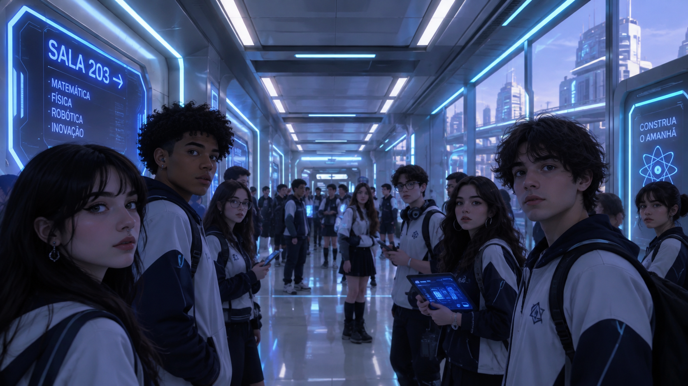

Uma aventura interativa
Escola do Futuro
Prepare-se para a aventura
Escolha como você quer ser chamado durante a história.

Era uma manhã comum. A escola estava cheia de alunos, conversas pelos corredores e professores correndo para chegar às salas. Tudo parecia seguir a mesma rotina de sempre.
{{nickname}} caminhava pelo corredor, esperando o início da próxima aula, quando percebeu que precisava ir ao banheiro. No caminho, notou um brilho azul perto da porta, mas ele desapareceu em um instante.
No caminho de volta para a sala, uma luz azul surge no corredor. O chão parece desaparecer e, num instante, você cai em uma escola muito diferente, cercada por estudantes.
O que você faz?

De repente, uma luz estranha começou a surgir no fundo do banheiro.
Com curiosidade, aproximou-se e percebeu algo impossível: um portal brilhante havia aparecido diante de si. Sem saber o que estava acontecendo, observou aquela passagem misteriosa.
ENTRAR?

Após adentrar o portal desconhecido, {{nickname}} sente o corpo inteiro formigar e a cabeça parece girar. {{identidade}} passa por sensações inexplicáveis até chegar a um lugar paralelo.
O novo lugar parecia como sua escola antiga, mas tinha algo diferente.
Game over: o portal desapareceu
Você chama a inspetora e conta sobre o brilho azul. Ela vai até o banheiro com você, mas, quando chegam, o portal já desapareceu. Sem pistas sobre o que aconteceu, o dia continua como se nada tivesse mudado — mas a aventura termina antes mesmo de começar.
Game over: voltar cedo demais

{{nickname}} escolhe voltar antes de descobrir o que existe do outro lado. O portal se fecha e a vida segue normalmente, mas a chance de ajudar a mudar o futuro se perde. A aventura termina aqui.
{{nickname}} dá de ombros e vai em direção à saída do banheiro. Quando já parecia ter escapado de uma situação anormal, o portal se abre logo abaixo de seus pés.
{{nickname}} cai em queda livre para dentro do portal, seu corpo inteiro formiga e seu estômago começa a embrulhar.

Quando se dá conta, {{identidade}} está no meio de um corredor escolar lotado. Algumas pessoas olham com espanto; outras correm para conversar.
{{nickname}} permanece sem reação, até um professor passar pelos estudantes e se aproximar. Ele pergunta se está tudo bem e diz que precisa conversar.
O professor explica que a escola está investigando uma anomalia no tempo. Ele não sabe exatamente de onde você veio, mas promete contar tudo se você o acompanhar até uma sala segura.
Você pode ouvir a explicação, tentar voltar por conta própria ou seguir o professor até os pesquisadores.

Enquanto andava procurando alguém para perguntar aonde estava, {{nickname}} percebe que robôs fazem a limpeza da escola e telas grudadas nas paredes mostram o horário de aulas..
{{nickname}} avista um aluno em cima de um skate voador conversando com um robô vestido de professor e decide falar com o menino.
O aluno não parece surpreso ao ouvir que você veio do passado. Ele conta que a escola pesquisa viagens no tempo e se oferece para ajudar.
Como você quer prosseguir?
Ele expressa uma reação indiferente e diz que você poderia ter falado com os robõs professores que ficam nos corredores.
Apesar disso, ele te leva à primeira aula do dia, mas diz que tem outros assuntos para resolver e vai embora, deixando você por conta própria.
Caminhando por daquela escola futurística, {{nickname}} percebe robôs fazendo limpeza dos corredores, telas grudadas na parede mostrando os horários das aulas e uma sala chama sua atenção.
A porta estava com a porta aberta e, lá dentro, {{nickname}} viu algo que parecia um holograma.
ENTRAR?
{{nickname}} entra furtivamente no que parece ser uma aula de história, o holograma mostrava fatos históricos como se acontecessem ali naquele espaço. {{nickname}} nunca imaginou ver algo assim com os seus próprios olhos
Durante a aula, o professor pergunta o que deu início à guerra cibernética de 2109 — um conflito que aconteceu 83 anos depois da época de onde você veio.
Você não conhece a resposta. O que fará?
Andando por aqueles corredores, {{nickname}} se depara com uma aula acontecendo
Ao lado de um robô com o seu interior aberto, um professor explicava o funcionamento e a programação desses robôs inteligentes que limpavam a escola e ajudavam os alunos.
O professor explica que aqueles robôs ajudam nas tarefas da escola e convida você a conhecer melhor a tecnologia. A conversa também revela que os pesquisadores estão trabalhando em projetos importantes.
O professor e os alunos parecem surpresos, não por você ter vindo do passado, mas por você ter entrado na aula sem avisar.
Você afirma que a revolta das máquinas iniciou a guerra cibernética. O professor consulta os registros históricos e percebe que essa revolta aconteceu décadas depois do conflito.
Ele não parece bravo, mas espera que você explique como sabe tanto sobre o futuro.
Game over: uma mentira sem saída
Você inventa uma resposta, mas os registros históricos mostram que ela está errada. Sem conseguir explicar sua história, perde a confiança do professor e a chance de chegar aos especialistas. A aventura termina sem uma forma de voltar para casa.
Alguns estudantes fazem diversas perguntas, outras pessoas tentam ajudar, até que um professor se aproxima.
O professor diz que a escola estava lhe esperando, mas não daquele jeito
O professor explica que a escola estava buscando meios de realizar viagem no tempo para se comunicar com alguém do passado, mas o portal acabou abrindo em um local inesperado
Você diz que precisa ir ao banheiro e aproveita a oportunidade para escapar daquela situação.
Andando por aqueles corredores, {{nickname}} se depara com uma aula acontecendo.
Ao lado de um robô com o seu interior aberto, um professor explicava o funcionamento e a programação desses robôs inteligentes que limpavam a escola e ajudavam os alunos.
Você senta em uma carteira vazia nos fundos e ninguém parece se importar com sua presença.
Você acompanha a aula e descobre a tecnologia fascinante daquele universo, se perguntando se poderia levar aquelas informações para a realidade de onde veio.
Ao sair da aula, um professor ofegante consegue te alcançar. Ele diz que os pesquisadores precisam falar com você sobre a viagem no tempo.
O professor explica que a escola tentou abrir um portal para se comunicar com alguém do passado, mas a passagem surgiu no banheiro por acidente. Ele quer te levar até a equipe responsável.
{{nickname}} percebe uma forte luz azul vindo da entrada do banheiro e decide checar.
Ao chegar lá, se depara com o mesmo portal de antes. Você acredita ser o portal que te levará para a realidade de onde veio.
{{nickname}} passa por aquelas mesmas sensações bizarras de atravessar o portal.
Mas, agora, o que você vê é aquela antiga escola de novo. Você voltou para casa com segurança, embora ainda não saiba por que o portal apareceu.
Ele te leva a uma sala que conta com a presença de físicos e engenheiros. O professor diz que o que eles tem para falar é de extrema importância
{{nickname}} sabe que, da realidade em que veio, as mudanças climáticas já afetam gravemente os ecossistemas e a população, mas nunca pensou que chegaria nesse estado tão rápido.
A decisão final
Os especialistas explicam que ainda há tempo para agir, mas precisam da sua ajuda. O portal está quase estável. Você só pode escolher um caminho.
Final: uma missão para o presente
Os especialistas entregam a você os registros e as descobertas que podem ajudar a evitar a crise. O portal se abre, e você volta à sua época levando consigo uma mensagem clara: o futuro ainda pode mudar.
De volta à escola, você compartilha o que aprendeu. No começo, poucas pessoas acreditam, mas você não desiste. Professores e estudantes se juntam para pesquisar, reduzir desperdícios e cuidar do ambiente. A mudança não acontece de um dia para o outro, mas agora existe um plano — e ninguém precisa enfrentar isso sem apoio.
Game over: o futuro esquecido
Os especialistas respeitam sua decisão e abrem o portal para você voltar. Sem os registros e sem alguém que leve o aviso ao passado, o projeto fica parado. Anos depois, a crise se agrava e a oportunidade de agir se perde.
Você chega em casa em segurança, mas sabe que a história poderia ter tomado outro rumo.
Final alternativo: construir o futuro
Você decide ficar. Com a ajuda dos especialistas, transforma as descobertas em um projeto aberto para toda a escola. Estudantes, professores e comunidades próximas aprendem a monitorar os ecossistemas e a recuperar áreas afetadas.
O trabalho é longo, mas cada geração acrescenta algo. Você não volta para a sua época, porém ajuda a criar um futuro em que as próximas pessoas terão mais escolhas e mais esperança.
O futuro começa agora
{{nickname}} atravessa o portal mais uma vez e retorna à antiga escola. A aventura termina, mas a missão continua: pequenas escolhas feitas em conjunto podem mudar o futuro.
Créditos
Jogo e história
Marcos G. e Maria R.
Obrigado por jogar!